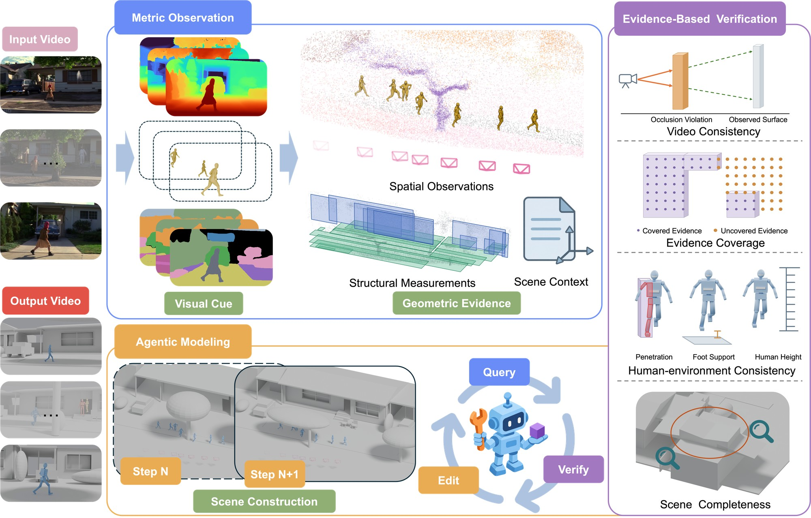
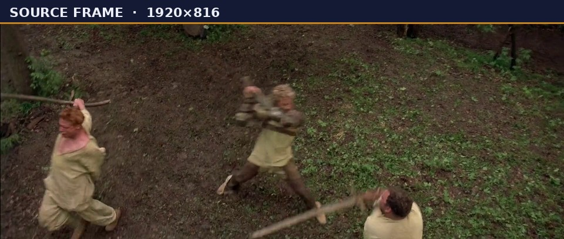
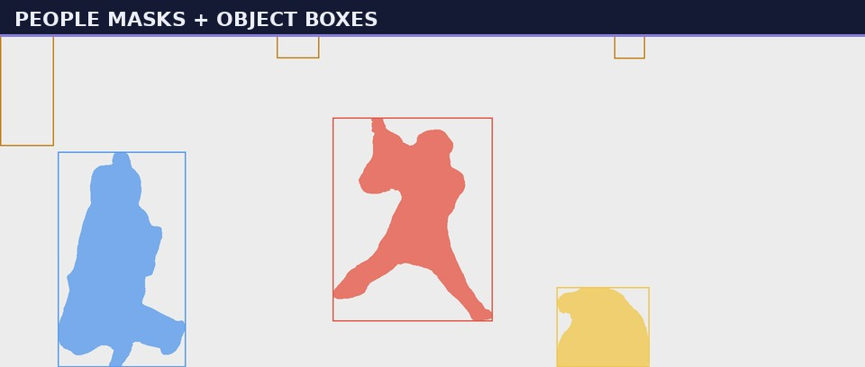
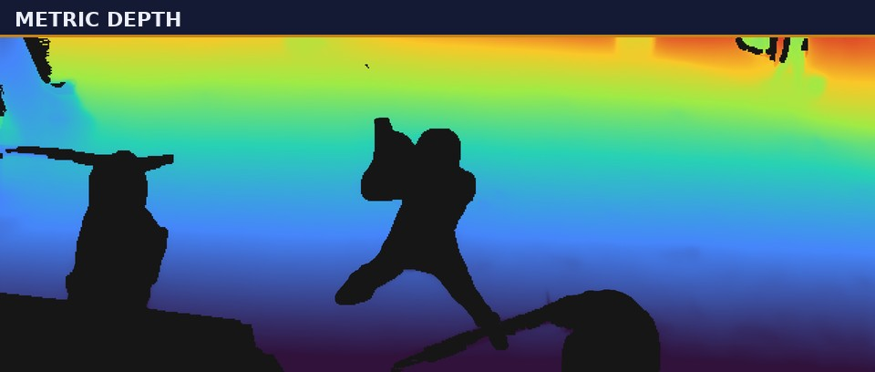
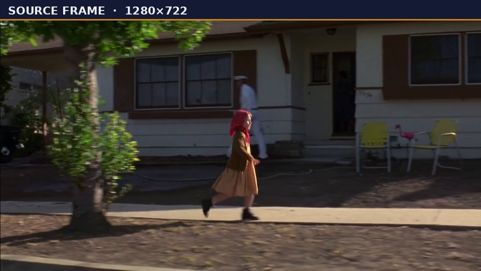
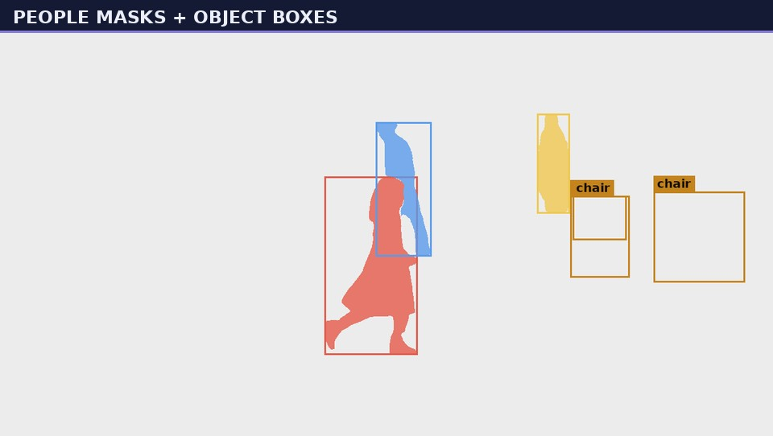
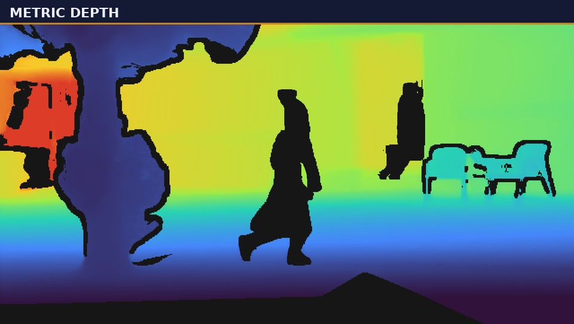
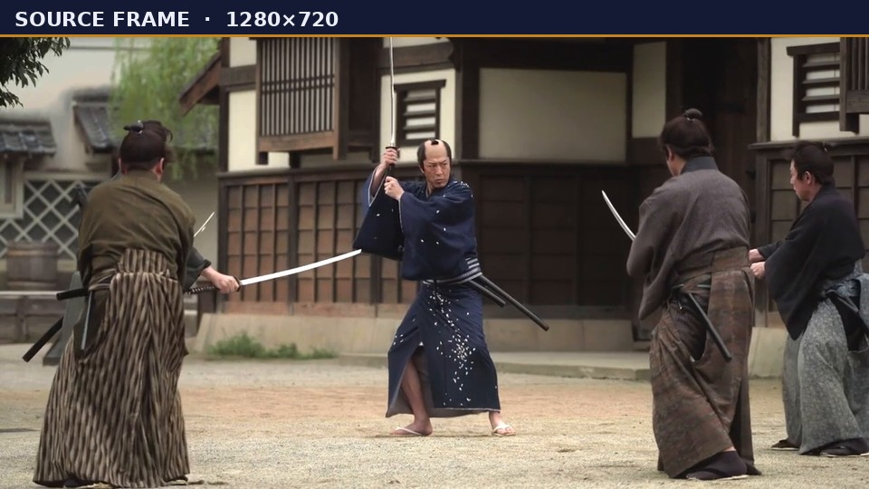
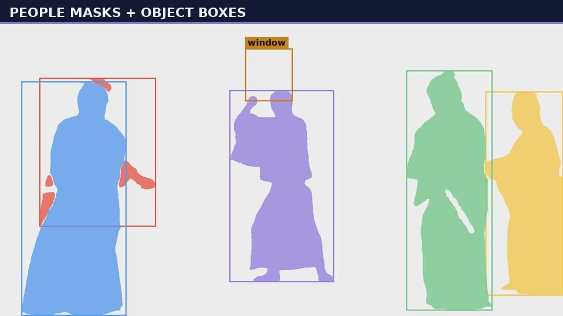
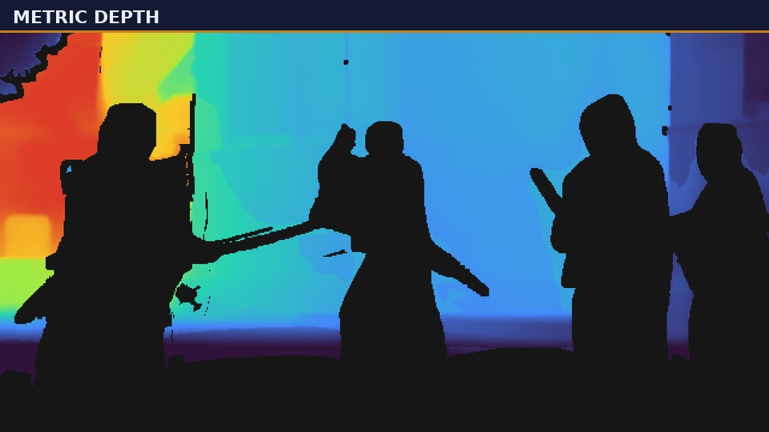

M · STAGE 01
Metric Observation
Cameras, human motion, depth and object cues, recovered in one shared metric coordinate system.
1GigaAI · 2CASIA · 3RUC · 4HKUST (GZ) · 5UCAS · 6THU · 7BUAA · 8ZPark IPC
* Equal contribution
01 · Method
Animated 3D blockouts support previsualization and condition video generation, but rebuilding them from reference footage by hand is slow. MAVE recovers cameras, human motion, and geometric evidence in one shared metric frame, has an agent construct an editable Blender scene under those constraints, and checks every step against the evidence. The output is an editable scene plus a frame-aligned blockout video.

Cameras, human motion, depth and object cues, recovered in one shared metric coordinate system.
An agent writes Blender code to place named, editable primitives — query, build, verify, edit.
Programmatic checks flag depth conflicts, missing coverage, and human–environment inconsistencies.
02 · Comparison
Each mosaic plays nine clips in sync. Row 1: input · Claude Opus 5.5 · Kimi K3.1 Pro. Row 2: vanilla GPT-6.1 Sol · DeepSeek-1017 · Claude Sonnet 5.5. Row 3: the same three agents with MAVE.
03 · Reconstructions
Left: the original shot. Right: MAVE's reconstructed blockout, rendered through the recovered camera. Every actor and prop is a named, editable object in Blender.
04 · Applications
Change a camera path or a character's trajectory in the blockout, render it, and use it to condition a video model. Two examples per edit type. In each clip, left is the original shot and right is the regenerated one.
05 · Results on MAVEBench
| Method | ORE ↓ | RRA@15 ↑ | RTA@15 ↑ | Cam. ↑ | OrdAcc ↑ | HOTA ↑ | MaskIoU ↑ | Char. ↑ | Total ↑ |
|---|
● best · underline second best, among reconstruction methods. All MAVE runs share cameras from Metric Observation.
MAVE reaches a far higher score with 2.4–3.2× fewer primitives, and cuts agent time by 42–55% for GPT-6.1 Sol and DeepSeek-1017. With DeepSeek-1017 it is also the cheapest run of all eight, at $0.054 per shot.
| Method | Agent time ↓ | # Primitives | Cost ↓ | Total ↑ |
|---|
Agent time excludes Metric Observation (1m28s per shot, shared by all MAVE runs).
06 · MAVEBench
Every keyframe carries human masks, static-object boxes, and metric depth — the evidence a blockout is scored against. Plus MAVEData-3K: 3,000 blockout–video pairs for training blockout-conditioned generators.









Full film media is available through gated access for research use.
07 · Citation
@misc{chang2026mavereconstructingeditable3d,
title={MAVE: Reconstructing Editable 3D Blockouts from Film Shots},
author={Yifan Chang and Jian Yang and Jiangnan Shao and Xiaofeng Wang and Zhaoxin Fan and Renjing Xu and Ming Lu and Xingang Wang and Zheng Zhu},
year={2026},
eprint={2611.22464},
archivePrefix={arXiv},
primaryClass={cs.CV},
url={https://arxiv.org/abs/2611.22464},
}